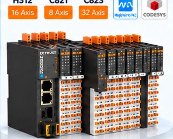

COTRUST
PLC, HMI, uzak I/O ve servo sistemleri. Ürün aileleri, uygulama alanları ve teknik kaynaklar.
COTRUST ürünlerini inceleEndüstriyel otomasyon alanında yenilikçi çözümler sunan üreticileri ve ürün ailelerini keşfedin.

PLC, HMI, uzak I/O ve servo sistemleri. Ürün aileleri, uygulama alanları ve teknik kaynaklar.
COTRUST ürünlerini incele